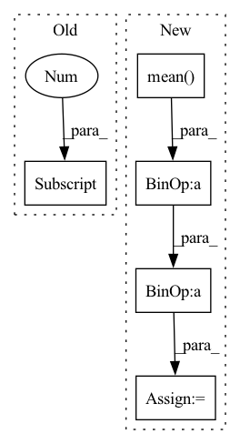

Pattern ID :37748
Before Change
x = x.reshape((-1,shape_x[-1]))
y = y.reshape((-1,shape_y[-1]))
corr_ = np.zeros((x.shape[0]) )
for i in range(x.shape[0]):
// Correlation of standardized variables
corr_[i] = np.correlate((x[i]-x[i].mean())/x[i].std(),(y[i]-y[i].mean())/y[i].std())After Change
y = y.reshape((-1,shape_y[-1]))
x = (x-x.mean(axis=1,keepdims=True))/x.std(axis=1,keepdims=True)
y = (y- y.mean(axis=1,keepdims=True) )/ y.std(axis=1,keepdims=True)
tmp_corr = x*y
corr_ = tmp_corr.sum(axis=1)In pattern: SUPERPATTERN
Frequency: 4
Non-data size: 5
Instances Fragment ID: 108390901
Project Name: braindecode/braindecode
Commit Name: 21870f5d55832b0539cfe7026425d358d0ca68d5
Time: 2018-01-25
Author: hartmank@informatik.uni-freiburg.de
File Name: braindecode/visualization/perturbation.py
M Class Name: AnonimousClass
N Class Name: AnonimousClass
M Method Name: correlate_feature_maps(2)
N Method Name: correlate_feature_maps(2)
M Parent Class:
N Parent Class:
M File Name: braindecode/visualization/perturbation.py
N File Name: braindecode/visualization/perturbation.py
M Start Line: 90
M End Line: 98
N Start Line: 90
N End Line: 97
Before Change
x = true_time_series.T[np.newaxis, :]
sign = torch.abs(torch.randn((x.shape[-1], 1)))
ws_layer = WilsonCowanLayer(
x.shape[-1], x.shape[-1] ,
forward_weights=forward_weights,
std_weights=std_weights,
forward_sign=0.5,After Change
if ws_layer.force_dale_law:
ratio_sign_0 = (np.mean(torch.sign(ws_layer.forward_sign).detach().cpu().numpy()) + 1)/2
else:
ratio_sign_0 = (np.mean( torch.sign(ws_layer.forward_weights).detach().cpu().numpy()) + 1)/ 2
print(f"ratio exec init: {ratio_sign_0 :.3f}")
dataset = WSDataset(true_time_series.T) Fragment ID: 108390869
Project Name: neurotorch/neurotorch
Commit Name: a19976d80f57c54d66a936925f12b6f25f452bb8
Time: 2022-09-28
Author: 50332514+JeremieGince@users.noreply.github.com
File Name: tutorials/time_series_forecasting_wilson_cowan/main_dale.py
M Class Name: AnonimousClass
N Class Name: AnonimousClass
M Method Name: train_with_params(20)
N Method Name: train_with_params(20)
M Parent Class:
N Parent Class:
M File Name: tutorials/time_series_forecasting_wilson_cowan/main_dale.py
N File Name: tutorials/time_series_forecasting_wilson_cowan/main_dale.py
M Start Line: 45
M End Line: 152
N Start Line: 51
N End Line: 168
Before Change
print("[*] Optimization has converged in {} mini batch iterations.".format(i_global))
break
self.A = optimizer.param_groups[0] ["params"][0].clone()
After Change
// zero-mean the input data
if normalize:
self._mean = X.mean(dim=0)
self._stddev = X.std(dim=0)
X = (X - self._mean) / self._stddev
optimizer = torch.optim.SGD([self.A], lr=lr, weight_decay=weight_decay)
iters_per_epoch = int(np.ceil(self.num_train / batch_size)) Fragment ID: 108390978
Project Name: kevinzakka/torchnca
Commit Name: 841d34939556e56a4a8a0d537c8a26d784bdef55
Time: 2020-02-08
Author: kevinarmandzakka@gmail.com
File Name: nca.py
M Class Name: NCA
N Class Name: NCA
M Method Name: train(7)
N Method Name: train(6)
M Parent Class:
N Parent Class:
M File Name: nca.py
N File Name: nca.py
M Start Line: 129
M End Line: 162
N Start Line: 125
N End Line: 162
Before Change
def get_loss(self, x):
predictions = self(x[:, :-1])
loss = F.cross_entropy(predictions.reshape(-1, predictions.shape[-1] ), x[:, 1:].reshape(-1))
accuracy = (torch.argmax(predictions[:, -1, :], dim=-1) == x[:, -1]).float().mean()
return loss, {"loss": (loss.item(), x.shape[0]*(x.shape[1]-1)), "accuracy": (accuracy.item(), x.shape[0])}After Change
// print(torch.argmax(predictions[:, -1, :], dim=-1), x[:, -1])
loss = F.cross_entropy(predictions[:, -1, :], y)
accuracy = (torch.argmax(predictions[:, -1, :], dim=-1) == y).float().mean()
attn_entropies = sum([-(attn * torch.log(attn+1e-7)).sum(dim=-1).mean().item() for attn in attns]) / len(attns)
param_norm = parameter_norm(self)
return loss, {"loss": (loss.item(), x.shape[0]), "accuracy": (accuracy.item(), x.shape[0]),
"attn_entropy": (attn_entropies, len(attns)*x.shape[0]*(x.shape[1]-1)), "param_norm": (param_norm, 1)} Fragment ID: 108390893
Project Name: sea-snell/grokking
Commit Name: 9652db76d1cbdbe66e24e709168b12fa25ba00fc
Time: 2021-11-18
Author: sea_snell@icloud.com
File Name: grokk_replica/grokk_model.py
M Class Name: GrokkModel
N Class Name: GrokkModel
M Method Name: get_loss(3)
N Method Name: get_loss(2)
M Parent Class: nn.Module
N Parent Class: nn.Module
M File Name: grokk_replica/grokk_model.py
N File Name: grokk_replica/grokk_model.py
M Start Line: 17
M End Line: 20
N Start Line: 18
N End Line: 26